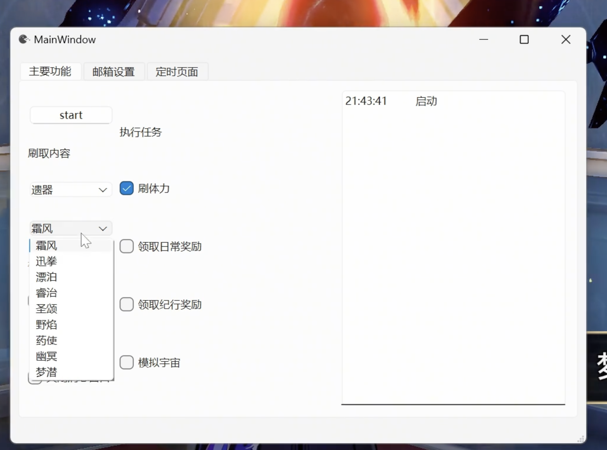
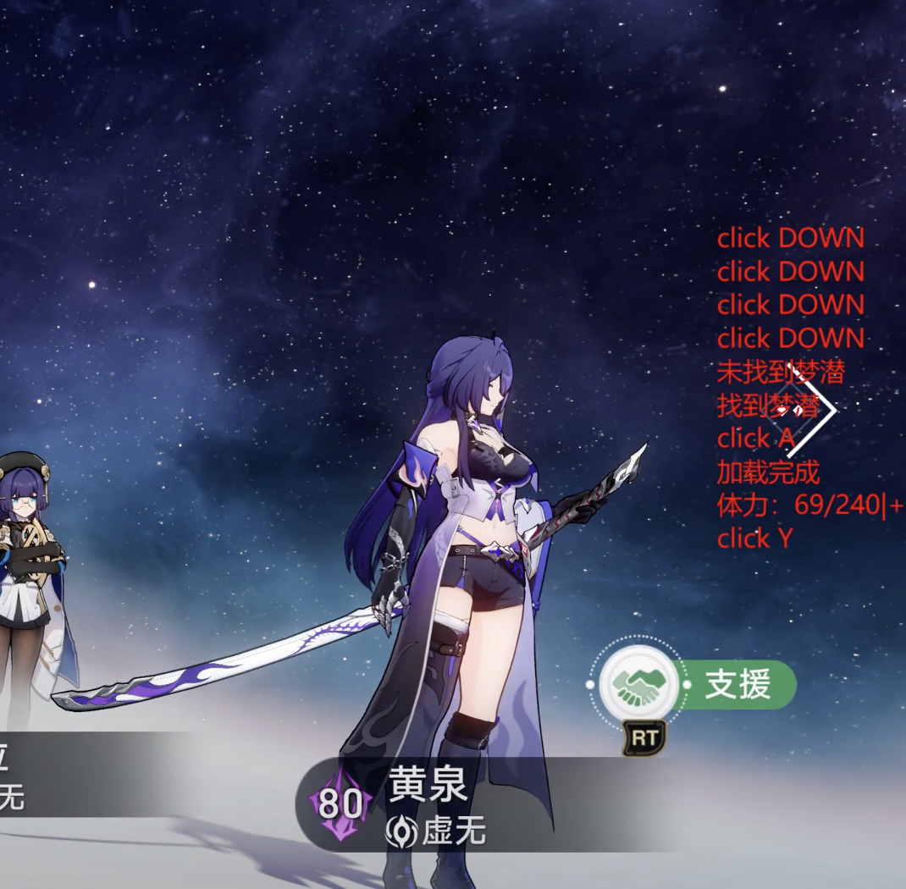

崩铁自动小助手SRA开发实录
[[#功能计划|功能计划]]
[[#功能实现|功能实现]]
[[#功能实现#操作的模拟|操作的模拟]]
[[#功能实现#窗口的识别|窗口的识别]]
[[#功能实现#GUI与自线程|GUI与自线程]]
[[#功能实现#消息窗口|消息窗口]]
[[#待实现及不足之处|待实现及不足之处]]
[[#开源地址|开源地址]]
崩铁小助手ASR 天下苦二游上班坐牢久矣。方舟有MAA造福大众，免去日常之苦，能让我专心于关卡，但是米家游戏就不行了，于是就有了这个崩铁小助手——AutoStarRail的想法。
功能计划 目前初步计划就是能够实现每天自动清体力，领日常奖励，让我不用操心每天还得上线清体力的事情。最后实现的界面如下，大概和方舟的maa差不多。

但是为了防止崩铁全屏运行时难以观察运行信息，所以又做了个始终在前台的message窗口，用于实现实时显示自动化脚本的信息。（窗口可放置在任意位置）

经过测试，选择好要刷的本（经验\钱、行迹、突破素材、仪器这些都没问题）后能够自动导航至目标副本，然后识别体力，刷到没体力为止。
演示视频如西瓜视频：从重复劳动中解脱-崩铁自动日常小助手
抖音：从重复劳动中解脱-崩铁自动日常小助手
完整开源代码见 AutoStarRail ，欢迎大家star。
功能实现 操作的模拟 操作上使用vgamepad创建虚拟手柄来对游戏进行操作。虽然这样会多一个虚拟设备，但是由于手柄操作时对选中部件的高亮，能够更容易的识别当前选中的东西，并进行精确的操作。
1 2 3 4 5 6 7 8 9 10 11 12 13 14 15 16 17 18 19 20 21 22 23 24 25 26 27 28 29 30 31 32 33 34 35 36 37 38 39 40 41 42 43 44 45 46 47 48 49 50 51 52 53 54 55 56 57 58 59 60 61 62 63 64 65 66 67 68 69 70 71 72 73 74 75 76 77 class Gamepad :def __init__ (self,pigeon = None ):def reset_gamepad (self ):def click_button (self,button,duration=0.15 ):0 ,int (0.05 *100 ))/100 )if self.pigeon:"click " + button_mapping[button])def press_button (self,button ):if self.pigeon:"press " + button_mapping[button])def release_button (self,button ):def LEFT_TRIGGER (self,value ):def RIGHT_TRIGGER (self,value ): def LEFT_JOYSTICK (self,theta,amplitude,ran_theta = 2 *np.pi/25 ,ran_amp = 1 /25 ): 0 ,ran_theta*100 )/100 0 ,ran_amp*100 )/100 1.414 *amplitude * np.cos(theta)1.414 *amplitude * np.sin(theta)if self.pigeon:"" + "Left joystick" )def RIGHT_JOYSTCIK (self,theta,amplitude,ran_theta = 2 *np.pi/25 ,ran_amp = 1 /25 ):0 ,int (ran_theta*100 ))/100 0 ,int (ran_amp*100 ))/100 if self.pigeon:"" + "Left joystick" )def joystick_movement (self, theta=0 , duration=0.5 , amplitude=1 ):while time.time() - start_time < duration:0.01 )
窗口的识别 这部分涉及到图像的一些识别。为了减少计算资源的消耗，本文主要使用paddleocr识别字符来定位。少部分地方用到了矩形框的识别。
游戏窗口识别 脚本启动时应当先识别当前有没有打开启动器、或游戏，再决定是否需要打开游戏。
对于老版本而言由于启动器和游戏名称都为“崩坏：星穹铁道”，因此无法仅从名称上判断窗口是哪个，还需要进一步判断是启动器还是游戏。可以通过窗口上是否有启动器上独有的字符判断是否为游戏。
因此，窗口检测的流程如下图所示。
flowchart TB
检查星穹铁道窗口 -->|有| 存在星穹铁道;
存在星穹铁道 --> 检查特征字符;
检查特征字符-->|有| 当前是旧启动器;
检查特征字符-->|无| 游戏已启动;
当前是旧启动器--> 点击打开游戏;
点击打开游戏--> 游戏已启动;
检查星穹铁道窗口 -->|无| 不存在星穹铁道;
不存在星穹铁道 --> 检查米哈游启动器窗口;
检查米哈游启动器窗口 -->|无| 不存在任何启动器;
不存在任何启动器 --> 搜寻启动器并打开;
搜寻启动器并打开 --> 点击打开游戏;
检查米哈游启动器窗口 -->|有| 启动了米哈游启动器;
启动了米哈游启动器--> 点击打开游戏;
其相关代码在start_game.py中，该部分代码能够实现自动识别当前是否有游戏窗口，如果无窗口则逐步实现打开游戏。
副本导航 该部分代码放置在daily_tasks.py中。
导航的第一步是打开星际和平指南，该步较为简单，直接使用虚拟手柄打开轮盘，然后拨到对应位置即可。
1 2 3 4 5 6 7 8 9 10 11 12 13 14 15 16 17 def open_star_guide (self ):1 / 4 , duration= 1 ) 0.8 )0 )"打开星际和平指南" )0.9 )
随后需要进一步识别星际和平指南的页面，以及寻找对应的副本。流程如下：
flowchart TB
打开星际和平指南 --> 领取日常奖励;
领取日常奖励 --> 每日实训;
打开星际和平指南 --> 清体力;
清体力 --> 生存索引;
生存索引 --> |经验/武器经验/信用点|拟造花萼金
生存索引 --> |行迹材料|拟造花萼赤
生存索引 --> |突破材料|凝滞虚影
生存索引 --> |遗器|侵蚀隧洞
和平指南页面识别 对于和平指南的页面，如每日实训、生存索引的识别，只需通过ocr识别有无对应字符即可找到该页面
1 2 3 4 5 6 7 8 9 10 11 def find_page (self,tag = "生存索引" ):if TargetDetector(self.window,self.gp).search_button(tag, RIGHT_SHOULDER):"找到" + tag)else :"未找到" + tag)
其中TargetDetect中的search_button为递归寻找，直到满足条件。
1 2 3 4 5 6 7 8 9 10 11 12 13 14 15 16 17 18 19 20 21 22 23 24 25 26 27 28 29 30 31 def search_button (self, btn_text, action ):""" 查找相应按钮 :param btn_text: 目标按钮名称 :param action: 找不到按钮对应操作 :return: """ if find:print (f'找到{btn_text} ' )return True else :0.2 + random.randint(0 , 10 ) / 100 )return self.search_button(btn_text, action)
页面中高亮位置的寻找 在确定找到页面后，我们需要识别出当前高亮的标签（如拟造花萼、侵蚀隧洞）是哪个。
此处我们可以先使用OCR识别有无目标文字，如果没有，说明当前页面不存在目标标签，需要继续翻页。如果存在，通过灰度阈值识别目标文字所在区域的灰度是否是选中的灰度，如果是则退出寻找，否则继续寻找。
flowchart TB
查询目标文字 --> |无|按下down_button;
按下down_button --> 查询目标文字;
查询目标文字 --> |有|计算目标文字所在区域灰度;
计算目标文字所在区域灰度 --> |范围内| 结束查找;
计算目标文字所在区域灰度 --> |范围外| 按下down_button;
1 2 3 4 5 6 7 8 9 10 11 12 13 14 15 16 17 18 19 20 21 22 23 24 25 26 27 28 29 30 31 32 33 34 35 36 37 38 39 40 41 def find_highlight (self, btn_text, action=None ): """ 寻找按钮的高亮状态。 通过截图并查找按钮文本，判断按钮是否处于高亮状态。如果按钮未高亮，则点击按钮并重试。 主要用于自动化测试中对按钮状态的判断和操作。 参数: btn_text (str): 按钮的文本内容，用于查找按钮。 action (function, optional): 当按钮未高亮时执行的操作，默认为None。可以是一个函数，该函数会在按钮未高亮时被调用。 返回: bool: 如果按钮处于高亮状态，则返回True；否则返回False。 """ if not find: 0.2 + random.randint(0 , 10 ) / 100 )return self.find_highlight(btn_text, action)if ave_gray < 100 : print (f'找到{btn_text} ' )return True else :0.2 + random.randint(0 , 10 ) / 100 )return self.find_highlight(btn_text, action)
右侧具体副本的寻找 使用手柄的话，右侧选择的副本会有一个橙色的矩形框作为高亮，因此识别矩形框就知道我们当前选中的是哪个了。
使用HSV颜色空间对橙色进行区分的效果并不理想。因此还是采用了矩形边框识别。
1 2 3 4 5 6 7 8 9 10 11 12 13 14 15 16 17 18 19 20 21 22 23 24 25 26 27 28 29 30 31 32 33 34 35 36 37 38 39 40 41 42 43 44 45 46 47 48 49 50 def detect_dungeon_boxes (self,image,text ):100 , threshold2=200 )10 2 ] 0.2 0 for contour in contours:if area > max_area and area < target_area:for contour in contours:if area > min_area_threshold:0 , 255 , 0 ), 2 )if max_contour is not None :return findelse :return False def find_dungeon (self,btn_text, action = None ):if self.detect_dungeon_boxes(figure,btn_text):print ('已选中：' + btn_text)else :0.2 + random.randint(0 , 10 ) / 100 )return self.find_dungeon(btn_text, action)
GUI GUI采用pyqt6实现。主要包括一个主窗口和一个消息窗口
子线程 在MainWindow中设置一个start案件，当被按下时启动一个子线程
1 2 3 4 5 6 7 8 9 10 11 12 13 14 15 16 17 18 19 20 21 22 23 24 25 26 27 28 29 30 31 32 33 34 35 36 37 38 39 40 41 42 43 44 45 46 47 48 49 50 51 52 53 54 55 56 57 58 59 60 61 62 63 @pyqtSlot() def on_start_button_clicked (self ):''' 开始执行相关任务 ''' if self.worker_thread and self.worker_thread.isRunning():False )"Start" )None True )else :"Stop" )lambda : setattr (self, 'worker_thread' , None ))if self.ui.enable_email.isChecked():@pyqtSlot() def on_set_email_clicked (self ):with open ('./config/credentials.txt' , 'w' ) as file:'\n' )'\n' )'\n' )'\n' )if self.ui.enable_email.isChecked():"1" )else :"0" )
子线程负责组合之前写好的各种查询、操作的脚本，实现自动化任务的操作
1 2 3 4 5 6 7 8 9 10 11 12 13 14 15 16 17 18 19 20 21 22 23 24 25 26 27 28 29 30 31 32 33 34 35 36 37 38 39 40 41 42 43 44 45 46 47 48 49 50 class TaskWorker (QObject ):str ) def undefined (self ):"开发中" )def __init__ (self,task_list = [], farm_info = None ):super ().__init__()False "崩坏：星穹铁道" )[0 ],pigeon = self.message_signal.emit)def task_dispatcher (self,task_list ):""" 根据任务列表调度执行任务 参数: tasks (list): 一个包含任务名称的列表，如 ['刷体力', '领取日常奖励'] """ '刷体力' : self.daily_tasker.clean_stamina, '领取日常奖励' : self.daily_tasker.daily_task, '领取纪行奖励' : self.daily_tasker.get_nameless_honor, '模拟宇宙' : self.undefined for task in task_list:if task in task_functions:"Task: " + task)if task == "刷体力" :else :5 )"Task: " + task + " complete" )else :f"未知任务: {task} , 跳过执行." )def run (self ):"Tasks: " +str (self.task_list))if self.task_list:"Checking if game is open..." )def stop (self ):True
线程之间通过
1 message_signal.emit(str )
传递消息。
消息窗口 消息窗口应当常驻在最上端，然后背景透明，且与鼠标不发生交互，大小可以自动调整
1 2 3 4 5 6 7 8 9 10 11 12 13 14 15 16 17 18 19 20 21 22 23 24 25 26 27 28 29 30 31 32 33 34 35 36 37 38 39 40 41 42 43 44 45 46 47 48 49 50 51 52 53 54 55 56 57 58 class MessageBox (QLabel ):def __init__ (self, text = "" , parent=None ):super ().__init__(text, parent)"background-color: rgba(10, 10, 10, 128); color: red;" )0 , 0 , 100 , 30 ) 20 )def set_font_size (self, size ):def set_text (self, text ):def show (self ):super ().show()500 ) def resizeEvent (self, event ):super ().resizeEvent(event)500 ) def adjustSizeToContent (self ):0 for line in lines:max (text_width,font_metrics.horizontalAdvance(line))len (lines) def eventFilter (self, obj, event ):if event.type () in (Qt.EventType.MouseButtonPress, Qt.EventType.MouseButtonRelease, Qt.EventType.MouseButtonDblClick, Qt.EventType.MouseMove):return False return super ().eventFilter(obj, event)def mousePressEvent (self, event ):
邮件通知 本助手添加了邮件通知功能，待自动化任务执行完成后将log发送至目标邮箱以实现提醒和记录。
1 2 3 4 5 6 7 8 9 10 11 12 13 14 15 16 17 18 19 20 21 22 23 24 25 26 27 28 29 30 31 32 33 34 35 36 37 38 39 40 41 42 43 class Email_sender :def __init__ (self,username = "" ,password = "" ,server = 'smtp.163.com' ,port = 465 , pigeon = print ) -> None :def set_email (self,username,password ):def send_email (self,body ):'plain' , 'utf-8' )'From' ] = Header(self.username, 'utf-8' )'To' ] = Header(self.username)'Subject' ] = Header("自动星铁message" , 'utf-8' )try :"邮件发送成功" )except smtplib.SMTPException as e:"Error: 无法发送邮件" , e)finally :
当前局限 现在的版本要求必须先打开好自动战斗并沿用自动战斗，否则脚本不会自动开启自动战斗，而是静待。
无战斗失败的异常处理。
无法设置是否吃燃料。
模拟宇宙功能未实现。
开源地址